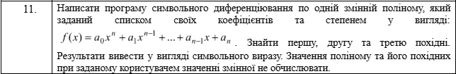
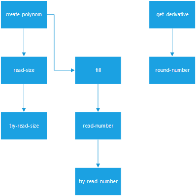
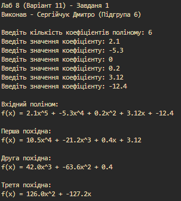
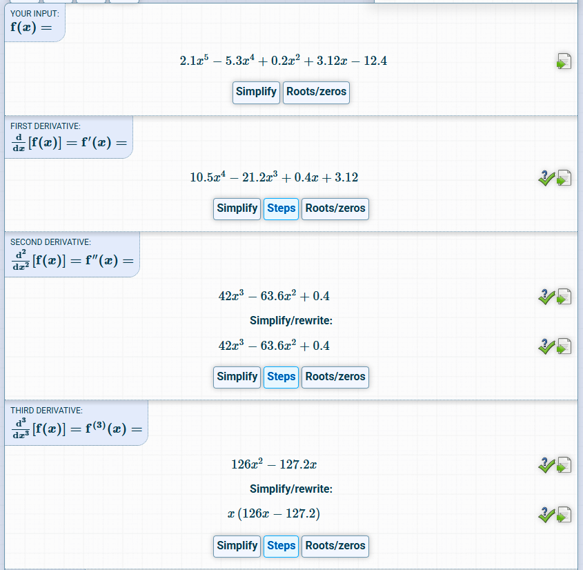

Мета
Опанувати теоретичні основи символьних обчислень мовами функціонального програмування. Розробити програми символьного диференціювання та реалізації арифметики поліномів
Умова
Аналіз
Для виконання даного завдання можна використовувати списки та пари. Значення елемента поліному можна зображати через пару, де перший елемент - сам коефіцієнт, а другий - значення степеня. Така структура добре підходить для обчислення похідної, де до кожного елементу, ми множемо його коефіцієнт на поточне значення степеня, а сам степінь зменшуємо на 1
HIPO Діаграма
Код
Code: Task1
#lang racket
(displayln "Лаб 8 (Варіант 11) - Завданя 1")
(displayln "Виконав - Сергійчук Дмитро (Підгрупа 6)")
(newline)
; Пробує прочитати з консолі ціле число (к-сть коефіцієнтів поліному), що більше 0
; Повертає число або #f, якщо було введено некоректні дані
(define (try-read-size)
(define input (read))
(if (and (number? input) (> input 0) (exact? input)) input #f))
; Читає к-сть коефіцієнтів поліному з консолі
; Працює у циклі, поки не буде введено коректні дані
(define (read-size)
(printf "Введіть кількість коефіцієнтів поліному: ")
(define size (try-read-size))
(if size
size
(begin
(printf "Некоректні дані\n")
(read-size))))
; Пробує прочитати число (занчення коефіцієнту поліному) з консолі
; Повертає число або #f, якщо було введено некоректні дані
(define (try-read-number)
(define input (read))
(if (number? input) input #f))
; Читає значення коефіцієнта поліному з консолі
; Працює у циклі, поки не буде введено коректні дані
(define (read-number)
(printf "Введіть значення коефіцієнту: ")
(define num (try-read-number))
(if num
num
(begin
(printf "Некоректні дані\n")
(read-number))))
; Виводить поліном у консоль
(define (print-polynom polynom)
(printf "f(x) = ")
(define (iter-print polynom-left [empty? #t])
(cond
[(null? polynom-left) (when empty? (printf "0"))]
[else
(let* ([elem (car polynom-left)]
[coef (car elem)]
[pow (cdr elem)])
(cond
[(zero? coef) (iter-print (cdr polynom-left) empty?)]
[else
(when (not (= (length polynom-left) (length polynom)))
(printf " + "))
(printf "~a" coef)
(cond
[(> pow 1) (printf "x^~a" pow)]
[(= pow 1) (printf "x")])
(iter-print (cdr polynom-left) #f)]))]))
(iter-print polynom)
(newline))
; Створює поліному на основі введених значень з консолі
(define (create-polynom)
(define size (read-size))
(define (fill [polynom '()] [iter 0])
(if (< iter size)
(fill (cons (cons (read-number) (- size iter 1)) polynom) (+ iter 1))
(reverse polynom)))
(fill))
; Скорочує число
; - num: число, яке необхідно скоротити
; - d: кількість цифр після коми
(define (round-number num [d 3])
(define k (expt 10 d))
(/ (round (* num k)) k))
; Повертає похідну многочлена
; - polynom: поліном, для якого шукається похідна
; derivative: похідна вхідного полінома
(define (get-derivative polynom [derivative '()])
(cond
[(null? polynom) (reverse derivative)]
[else
(let* ([elem (car polynom)]
[coef (car elem)]
[pow (cdr elem)])
(if (zero? pow)
(get-derivative (cdr polynom) derivative)
(get-derivative (cdr polynom) (cons (cons (round-number (* coef pow)) (- pow 1)) derivative))))]))
(define p1 (create-polynom))
(newline)
(printf "Вхідний поліном:\n")
(print-polynom p1)
(newline)
(define p1-1 (get-derivative p1))
(printf "Перша похідна:\n")
(print-polynom p1-1)
(newline)
(define p1-2 (get-derivative p1-1))
(printf "Друга похідна:\n")
(print-polynom p1-2)
(newline)
(define p1-3 (get-derivative p1-2))
(printf "Третя похідна:\n")
(print-polynom p1-3)
(newline)
Code: Task 2
Результати
Перевірка
Для перевірки коректності пошуку похідних було використано даний онлайн ресурс: Derivative Calculator
Перевірка коду ШІ
Введний запит: "чи відповідає даний код на мові програмування racket критеріям простоти та clean code? (код завдання)"
Відповідь Chat GPT:
✅ Що зроблено добре
-
Коментарі зрозумілі й доречні
Вони пояснюють, що робить кожна функція, і в більшості випадків — які параметри вона приймає та що повертає
-
Функції мають єдину відповідальність
Кожна функція робить щось одне:
- try-read-size / try-read-number — валідація вводу
- read-size / read-number — читання з повторною спробою
- print-polynom — вивід
- create-polynom — побудова полінома
- get-derivative — знаходження похідної
Це дуже добре з точки зору clean code
-
Послідовне найменування.
Усі функції названі у схожому стилі (read-*, try-read-*, print-* тощо), що покращує читабельність
-
Функціональний стиль з рекурсією використано правильно
Код не має явних побічних ефектів (окрім I/O), і логіка чиста
-
Коректна робота з базовими випадками
Наприклад, якщо всі коефіцієнти нулі, print-polynom виведе f(x) = 0.
⚙️ Що можна покращити
-
Повторення коду у read-size та read-number
В обох випадках ти маєш однакову логіку:
Code(if value value (begin (printf "Некоректні дані\n") (function-again)))Це можна узагальнити в окрему функцію:
Code(define (read-with-prompt prompt try-read) (printf "~a" prompt) (define value (try-read)) (if value value (begin (printf "Некоректні дані\n") (read-with-prompt prompt try-read))))Тоді:
Code(define (read-size) (read-with-prompt "Введіть кількість коефіцієнтів поліному: " try-read-size)) (define (read-number) (read-with-prompt "Введіть значення коефіцієнта: " try-read-number))Це зменшує дублювання коду — головний принцип clean code.
-
print-polynom можна спростити
Твоя функція зараз досить складна через вкладену рекурсію.
Її можна зробити більш декларативною, наприклад:
Code(define (term->string coef pow) (cond [(zero? coef) ""] [(= pow 0) (format "~a" coef)] [(= pow 1) (format "~ax" coef)] [else (format "~ax^~a" coef pow)])) (define (print-polynom polynom) (define terms (filter (λ(s) (not (string=? s ""))) (map (λ(p) (term->string (car p) (cdr p))) polynom))) (printf "f(x) = ~a\n" (if (null? terms) "0" (string-join terms " + "))))Тут код коротший, легше читати й простіше змінювати
-
Змінна empty? у print-polynom виглядає зайвою
Вона служить лише для перевірки, чи перший елемент виведено — але цього можна уникнути, якщо формувати список рядків і потім об’єднати через string-join, як показано вище
-
Відсутня функція для обчислення похідної n-го порядку
Ти тричі викликаєш get-derivative вручну. Можна зробити так:
Code(define (nth-derivative poly n) (if (zero? n) poly (nth-derivative (get-derivative poly) (- n 1))))Тоді:
Code(for ([i (in-range 4)]) (printf "~a похідна:\n" i) (print-polynom (nth-derivative p1 i)) (newline))Це гнучкіше й чистіше
Висновок
В даній лабораторній роботі було продемонстровано роботу з символьними обчисленнями. Дане завдання не вимагало застосування чогось нового, що вже було пройдено під час попередніх лабораторних робіт